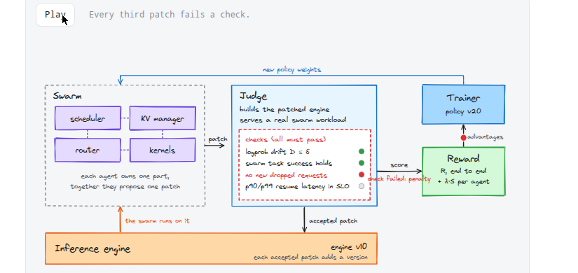
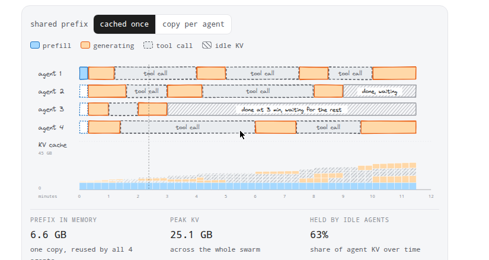
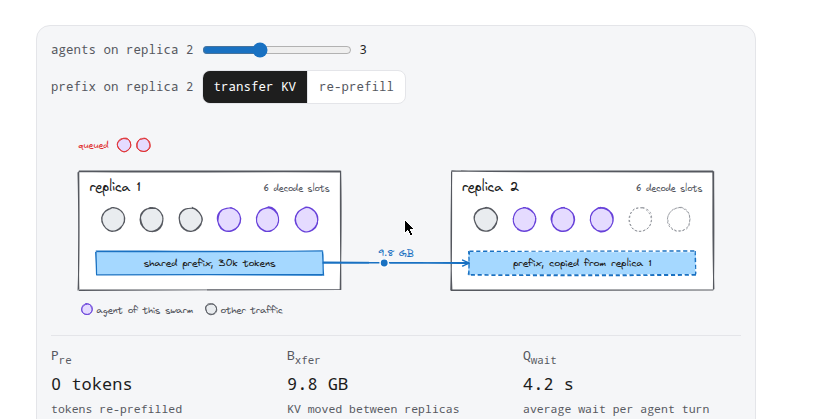

Kernel的自优化已接近可解，但把整个推理引擎放进RSI循环（Recursive Self-Improvement），复杂度指数级膨胀。Gaurav Jain从Kimi K2.5和Prime Intellect的多智能体系统获得灵感，勾勒了一个5万英尺视角的设计：多智能体群各管推理栈的一部分，联合优化。
推理栈可拆成调度器、KV缓存管理器、路由器、kernel等多个复杂组件。直观的优化思路是部署多智能体群：每个智能体认领栈的一部分，各自优化同时彼此协调。5万英尺视角下，系统长成Fig.1的样子。
Swarm里的四个智能体（scheduler、KV manager、router、kernels）各管一段，联合提出一个patch。环境（judge）把patch后的引擎构建出来，在真实swarm负载上跑，做四项检查：logprob漂移、swarm任务成功率保持、无新增dropped请求、p90/p99恢复延迟在SLO内。全过则分数进reward，trainer发回新策略权重。每接受一个patch，引擎版本加一，swarm自己就跑在新版本上。每第三个patch会挂一项检查并被扣分，动画里能看到这个循环。

对kernel，环境相对好办：给GPU，上nsys/ncu，指明看哪些指标，设计空间清楚。但到引擎层，流量的形状直接决定该跑什么优化：输入长度分布、输出长度、batch大小、会话间有没有缓存复用，样样都影响。
多智能体群把事情搞得更复杂：要算agent之间的前缀共享，有的agent在工具调用时空转却还占着KV缓存，有的早早做完等别人。Fig.2是四个agent在同一引擎上跑同一请求的例子：都从20k token的同一前缀起步，引擎缓存一次，agent 2到4命中缓存（虚线prefill框）。阴影KV属于空转的agent，要么做完了要么在等工具调用。前缀只存一份6.6 GB，全群峰值KV 25.1 GB，空转agent占了63%。
环境的挑战是把这些体验都喂给智能体：monitor、optimize、deploy、monitor，不断循环。Prime Intellect的PRIME-RL、MARTI、AgentJet这类多智能体训练框架可以接环境用。

奖励设计先看一个具体问题：同一swarm的agent，是该待在同一引擎副本上吃前缀命中，还是分散到多副本并在副本间传KV？Fig.3里八个agent共享30k token前缀，分在两个各6个decode槽的副本上。都挤副本1则无重prefill、无传输，但可能排长队；挪过去则副本2要重算前缀或从副本1接收。这个例子里空闲槽一轮20秒，超载后按比例变慢。
每个agent的奖励按自己那部分的指标算改进量：Δx=(x_base−x_new)/x_base，相对原版引擎改进了多少。KV manager看空转KV占用（GB·s），router看前缀相关指标。上面再加端到端奖励R：swarm整体快了多少、多塞下几个swarm。一个待定的想法是把per-agent系数 λ 随训练退火到0，最后只优化端到端R。
轨迹和rollout是另一块。理想轨迹里智能体执行、profiling、写代码、再执行再profiling，层层递进。Cognition的Kevin给kernel生成用的中间奖励是每轮refinement都打分，按折扣求和。对引擎，中间奖励来自本地replay，最后一下来自judge在held-out任务上的verdict。

把范围扩到整个引擎，轨迹时间直接爆炸：kernel几秒的事，引擎级可能几小时。轨迹一长，trainer等不起所有rollout跑完，同步循环不可行，只能异步RL。引擎任务里只能选继续执行（continuation）那条路，至于序列怎么用、loss怎么算、奖励怎么挂，都是策略设计选择。
执行环境也要可控：机架级优化循环又慢又不一定比小规模多出洞察。长轨迹下异步加序列中途权重更新是唯一能跑的配置，难的不是系统而是拿这些序列做什么。
收尾看，作者认为把引擎放进RSI循环，关键不在单个目标，而在四件事对齐：能跑真实swarm的环境、可行动的指标、靠谱的奖励归因、撑得住长轨迹的异步训练。哪一块掉链子，循环都转不起来。
参考：https://gauravjain.bearblog.dev/inference-rsi-put/